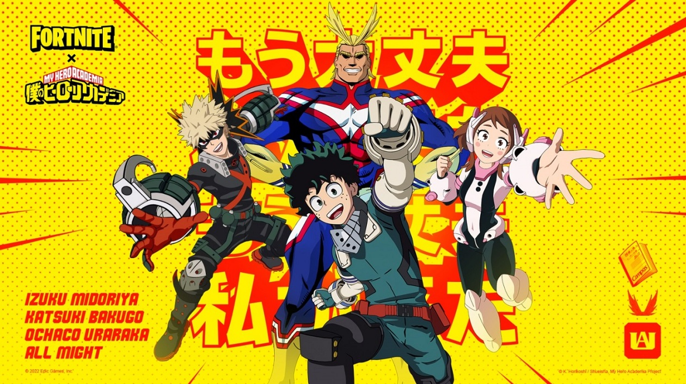
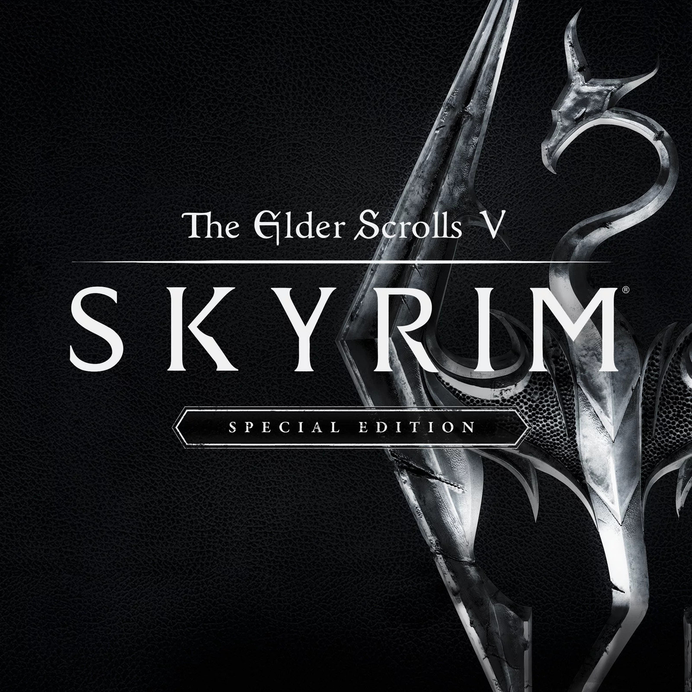
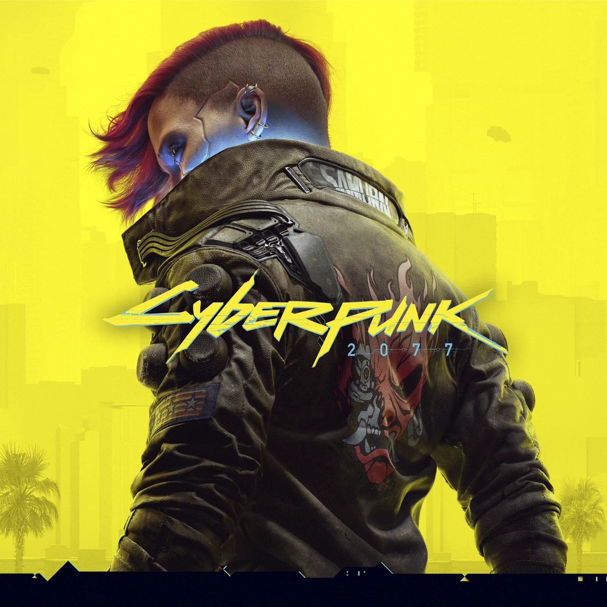
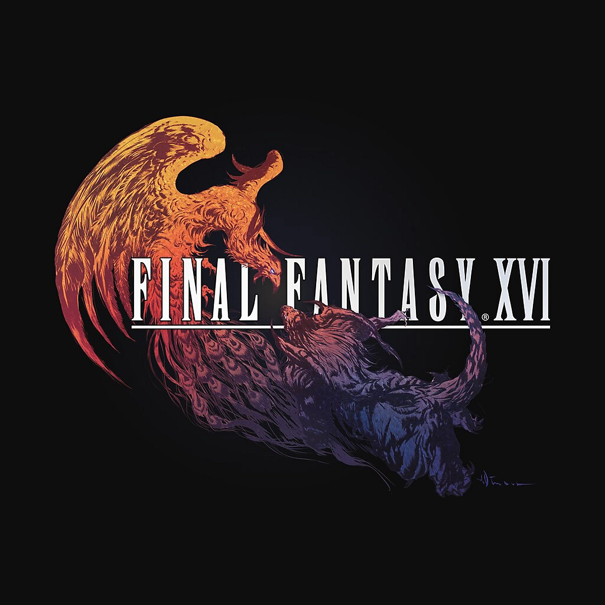

My Hero Academia Swoops Into Fortnite Today

Fortnite is crossing over with another big anime. This time, the saviors of My Hero Academia join the fight.
Beginning today, you can rack up victory royales as characters from the hit series, compete in a new game mode, and earn rewards by completing special challenges.
Fortnite is crossing over with another big anime. This time, the saviors of My Hero Academia join the fight. Beginning today, you can rack up victory royales as characters
from the hit series, compete in a new game mode, and earn rewards by completing special challenges. You can purchase outfits for Izuka Midoriya, All Might, Katsuki Bakugo,
and Ochaco Uraraka. Each comes with a matching back bling and pickaxe. New items include the Deku’Smashitem, which allows players to pummel opponents and structures by
challenging the power of One for All You can also pick up two new emotes: Symbol of Peace and Hero Analysis. All Might will also be showering the battlefield with loot-filled
supply drops. You can sharpen your superhero skills at the Hero Training Gym. This new Creative mode lets players select one of three classes to face other players in team battles.
You’ll earn Rescue Points for your squad by eliminating players or capturing Rescue Zones that pop up in the arena. The first team to earn 100 points wins the challenge. Completing
limited-time My Hero Academia quests earns XP and special items in either battle royale mode or the Hero Training Gym. These missions are:Complete the “Assist in Eliminating Opponents
on the Hero Training Gym island” Quest to earn the Deku Spray.Complete the “Secure Rescue Points on the Hero Training Gym island” Quest to earn the Plus Ultra Spray.Complete a total of
four My Hero Academia Quests to earn the Deku’s Glove Emoticon.Complete a total of eight My Hero Academia Quests to earn the U.A. Cape Back Bling.
Fortnite's My Hero Academia event runs until December 29.
Skyrim Is Re-Releasing For The Millionth Time With Skyrim Anniversary Edition

QuakeCon 2021 is going on now and the annual showcase kicked off with a pleasant Quake remaster announcement and a plethora of intriguing panels to listen in on. It also came with the confirmation that Skyrim is re-releasing again for the billionth time, just in case anyone forgot it existed.
Because this is called the Anniversary Edition, the latest re-release will be dropping on November 11 later this year, ten years post-launch.
Elden Ring Song Lyrics Are Apparently Gibberish

If a song during an Elden Ring boss fight has ever hyped you up, specifically because you think its choral melodies feature lyrics speaking of your heroic deeds (what, just me?), then you should turn away from this story right now.
That’s because apparently, the lyrics in most Elden Ring songs are completely gibberish and void of meaning. This news comes from Eurogamer, which discovered Reddit user Magister Organi, a student studying Latin, and their diligent attempted translation of the songs of Elden Ring.
Gran Turismo 7 Creator Says PC Version Not In Development

A PC version of Gran Turismo 7 is reportedly not in active development, according to Polyphony Digital president Kazunori Yamauchi.
Late last month, Yamauchi said that Polyphony Digital was "considering" developing a PC port of the most recent instalment to the Gran Turismo franchise. However, when asked
by Dengeki Online if a PC version was actually in active development, Yamauchi responded with, "That's not true.
Most Overlooked Game of 2022 - Horizon Forbidden West

Simply put, Horizon Forbidden West, for all of the good things it did, was forced to come out just a week before the behemoth of an anticipated title that was Elden Ring. Between Forbidden West’s launch on February 18, 2023, and Elden Ring’s launch on February 25, that was just a measly week before we moved from one amazing open world adventure to another one. It’s a true shame too because that is hardly enough time to really enjoy everything Horizon Forbidden West had to offer. Don’t get us wrong.
We loved Forbidden West and we loved Elden Ring, but you have to admit it’s a little unfair if you were a fan of both.
Cyberpunk 2077 Is Getting a Complete Edition With All DLC Included

CD Projekt Red president and joint-CEO Adam Kiciński said during an investors conference that Cyberpunk 2077 will receive this updated edition in a similar vein (but maybe not with the same branding) as the Game of the Year edition of The Witcher 3: Wild Hunt.
"I don’t want to announce editions. I’ve said it because it is the natural way of things," he is confirmed as saying. "We did the same with The Witcher 3, which - after two expansions - was finally published as a Game of the Year Edition, and has been distributed in this form ever since. So - we should expect the same here; it’s a fairly natural direction for us to take."
A Resident Evil 4 Fan-Made HD Remaster 8 Years In The Making Launches Next Month

Resident Evil 4 is arguably the best entry in Capcom’s iconic horror franchise. The game’s staying power is particularly noteworthy as several re-releases and a (leaked) remake continue to bring Leon’s action-packed journey through the plagued Spanish countryside to newcomers and old school players. Moreover, a Resident Evil 4 fan-made Remaster that’s been eight years in the making is slated to finally launch next month, as reported by Eurogamer. And based on the extensive trailer (seen below), it was well worth the wait.
Final Fantasy 16: Everything we know so far

Final Fantasy 16 is only half a year away—for PlayStation 5 owners. Sadly, over here on PC, we're in for a longer wait before we get to slam Eikons together in the latest mainline Final Fantasy's megabeast battles.
This is the first wholly new mainline Final Fantasy sequel since Final Fantasy 15 (opens in new tab) and, in true series form, it appears to star brand new characters in a whole new world. And by all appearances, its going to play like something between FFVII Remake and a Kaiju battle film.
Here's everything we know, and have speculated, about Final Fantasy 16
Overwatch 2: Themes That Would Be Great For Future Seasons

Overwatch 2's new Seasonal format has been an interesting concept to say the least. Map rotations have been divisive, though it is hard to argue against the steady release of new maps and heroes being healthy for the game. Balancing has been hit or miss, though the battle pass provides good value even if fans wish it came with virtual currency. However, nothing exemplifies the hit or miss nature of Overwatch 2 better than its seasonal themes.